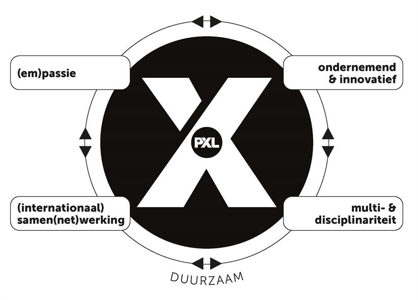

<div class="container d-flex justify-content-center">
    <div class="w-75 mb-5">
        <h1><strong><u>Eindreflectie</u></strong></h1>
        <p>Ik had initieel niet echt doelen gezet voor mijn eigen bij de start van I-Talent omdat ik niet compleet wist wat het inhield of wat ik allemaal ging doen. Terugkijkend zou ik zeggen dat het hoofddoel van I-Talent is om je eigen de kans te geven om nieuwe interesses te ontdekken.</p>
        <p>Met de grote hoeveelheid en variëteit van seminaries, de optie om een innovatieroute te volgen in een andere discipline dan je je thuis in voelt en de mogelijkheid om levenservaringen op te doen met de internationale projecten/uitstappen, is dit doel zeker bereikt. Het was wel jammer dat de internationaliseringsmogelijkheden gelimiteerd waren dankzij Covid.</p>
        <p>Ik denk dat ik door dit proces, verschillende domeinen en technologieën verkennen en proberen, een versie van mijzelf ben geworden die beter weet wat hij wilt, maar ook meer openstaat voor te ontdekken wat hij wilt.</p>
        <p>I-Talent heeft geholpen enkele dingen over mijzelf te ontdekken. Zoals sommige activiteiten aantonen, vooral de innovatieroutes, vind ik het heel leuk om nieuwe technologieën en nieuwe zaken te proberen. Ergens in de tweede trajectschijf ben ik geïntrigeerd geraakt door coding challenges. Ik heb vanaf toen meegedaan aan Advent of Code waar PXL aan deelneemt, heb wat gelezen hierover, deelgenomen aan Code Jam en Hash Code van Google en hierbuiten nog oefeningen gedaan.</p> 
        <p>Hetzelfde met Unity, ik ben altijd wel geïnteresseerd geweest in game development en heb opeens beslist dat ik iets nieuws wou proberen en heb het dan gedaan.</p>
        <p>Ik ben altijd wel van mening geweest dat je moet streven zo veel mogelijk te weten en te kunnen, maar tijdens de afgelopen twee jaar is dit enorm vermenigvuldigd. Er was nu de mogelijkheid om seminaries over verschillende topics te volgen en soms was het jammer dat 2 seminaries die interessant leken in dezelfde week vielen, maar er was zo veel keus. Ik doe ook mijn best om mijzelf niet in een hokje te zetten en kennis over meerdere domeinen te vergaren.</p>
        <p>Uit deze 2 jaar is er dan ook een nieuwe passie ontstaan voor mij, ik lees regelmatig boeken om mij bij te scholen. Dit klinkt misschien niet zo speciaal, maar dit is iets wat ik nooit gedaan zou hebben een paar jaar terug.</p>
        <p>Naar de toekomst toe denk ik dat mijn leergierigheid mij zal blijven aanzetten tot het proberen van nieuwe technologieën en mijn doorzettingsvermogen gepaard met mijn focus ervoor zal zorgen dat ik aanhoud in de dingen die ik verken.</p>
        <p>Ik had het idee om eventueel jaarlijks in plaats van een lijst met nieuwjaarsresoluties, een lijst met technologieën waar ik mee in aanraking wil komen op te stellen.</p>
        <div class="w-100 d-flex justify-content-center my-5">
            
        </div>
        <strong><u>(em)passie</u></strong><br/>
        <p>Nu de opleiding tot een einde komt, vind ik dat ik kan zeggen dat ik een zekere passie heb voor ontwikkelen. Ik heb het nog nooit eerder voorgehad dat ik in mijn vrije tijd en met plezier schoolwerk en zelfs extra werk deed. Ik kijk regelmatig uit naar zowel het beginnen als het afronden van een project, iets wat een zekere liefde aantoont voor hetgeen wat je graag doet.</p>
        <p>Ik ben zeer makkelijk om mee samen te werken, ik heb natuurlijk mijn meningen over hoe ik denk dat iets best verloopt, maar ik zorg er actief voor dat ik ook altijd duidelijk maak dat dat is wat ik denk en dat ik opensta voor andere meningen.</p>
        <strong><u>Ondernemend & innovatief</u></strong><br/>
        <p>Ik vindt het geweldig om nieuwe dingen te integreren in een project. Ik ben ook een stuk assertiever geworden de afgelopen 2 jaar en durf zelf keuzes te nemen en hier ook verantwoordelijkheid voor op te nemen.</p>
        <strong><u>(internationaal) samen(net)werking</u></strong><br/>
        <p>We hebben al enkele projecten gemaakt in team in de opleiding en het valt mij op dat dit elke keer beter lijkt te gaan. Er is hier zeker nog ruimte voor verbetering, maar volgens mij gaat deze verbetering ook komen uit de volgende paar projecten.</p>
        <p>Ik ben behulpzaam ingesteld en deel altijd graag kennis indien mogelijk net zoals ik feedback uitnodig. Op deze manier haalt elke partij in een team er het meeste uit en als gevolg het hele team.</p>
        <strong><u>multi- & disciplinariteit</u></strong><br/>
        <p>Leergierigheid en openstaan voor nieuwe dingen te proberen staan hier centraal volgens mij. Dit zijn beide eigenschappen waarvan ik zou zeggen dat ik ze bezit.</p>
        <br/>
        <p>Uiteraard zijn er nog dingen om aan te werken, zoals bijvoorbeeld de samenwerking nog soepeler laten verlopen en er meer uit halen. Je meer verdiepen in je discipline en multidisciplinariteit kunnen altijd verbeterd worden, maar al bij al vind ik dat ik de X-Factor bezit.</p>

    </div>
</div>